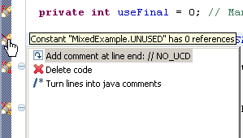
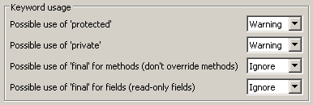
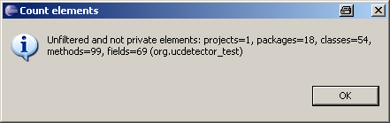

AboutUCDetector (Unnecessary Code Detector) is a eclipse PlugIn tool to find unnecessary (dead) public java code. For example public classes, methods or fields which have no references. UCDetector creates markers for the following problems, which appear in the eclipse problem view:
UCDetector also finds cyclic dependencies between classes in your code. This cycle classes are shown in s special cycle view. Installation
Quick startInstead of clicking Shift+Ctrl+G (search references in workspace) all the time, follow the next steps:
Really want to change code?The problems found by UCDetector, are only suggestions. Before changing code, you should really know what you are doing! If UCDetector tells you, that there are no references your code still may be used by:
Change visibility may cause problems with inheritance, reflection, instantiation... It's good idea to do a full text search in workspace for the piece of code, you want to change. |

|
Change code, use QuickFixes!After checking carefully all the possibilities above, maybe you decide to change your code. Click on the marker to see QuickFixes's to change code:
|
 |
Ignore codeUse "NO_UCD" tag in code, for lines, which should be ignored:/** * Class is only used by reflection. * Write a "NO_UCD" comment at the end of the line. * This line will be ignored by UCDetector. */ public class BeanExample { // NO_UCD | |
Write your own detector!Check out project "org.ucdetector.additional" from SVN:svn co https://ucdetector.svn.sourceforge.net/svnroot/ucdetector ucdetectorCreate your own problem markers! I already provided example code for
protected void handleType(IType type) throws CoreException {
String className = type.getElementName();
if (!type.isAnonymous() && !startsWithUpper(className)) {
markerFactory.createMarker(type,
"Class name must start with upper case");
}
To create your own detector:
|
Select menu: Window/Preferences.../UCDetector
FilterIt is possible to filter java elements (and all its children), which should not be checked by UCDetector. A simple regular expression is used:
You can enter more than 1 entry, using the separator "," Ignore bean methods: public String getName(); public void setName(String name); public boolean isValid(); |
|||||||||||||||||||||
|
DetectDetect code with max number of references: In classes, in methods, in fields:
Select what kind of code should be marked:
File name pattern to search: |
|||||||||||||||||||||
KeywordPossible use of protected or
private: Possible use of final for fields: Possible use of final for methods:
Maybe this rules are not OK for you! Anyway: Apply changes for this rule carefully. |
 | ||||||||||||||||||||
OtherHTML report:
To create custom reports change: ECLIPSE_HOME/plugins/org.ucdetector_*.jar/org/ucdetector/report/html.xsltMax cycle size: For cycle detection you can choose the "max cycle size". If there are many cycles in your code, a big number here makes cycle detection very slow! |
Right click on classes, packages or projects, Select context menu: "UCDetector/detect cycles".
The class cycles will appear in the Cycle View. Browse the class cycles by exploring the
cycle tree.
|

|
It is possible to count code checked by UCDetector. Select context menu: "UCDetector/count elements"
|
 |
Delete UCDetector markers by right clicking on a java element which contains
the markers and select: |
|
FAQHow do I fix a OutOfMemoryError? Does UCDetector find unnecessary private code? Can I trust UCDetector warnings? Is there a UCDetector version for other IDE's? I need UCDetector to check name conventions. Can you extend UCDetector? Is there a ANT task to create UCDetector to create a UCDetector report? How do I get rid of all this UCDetector warnings? Why did you create UCDetector? How can I see UCDetector traces? LicenseUCDetector is Open Source and published under the Eclipse Public License v1.0 |
| Last Update: 2008-10-12 | Copyright © 2008, by Joerg Spieler |
|
Page views since 2008-03-01:
|
Hosted by:
|